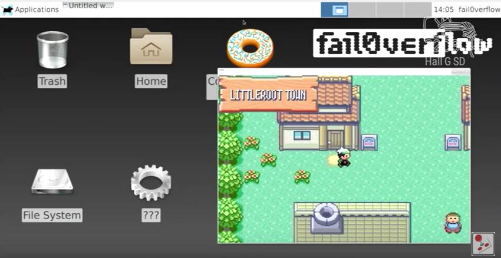
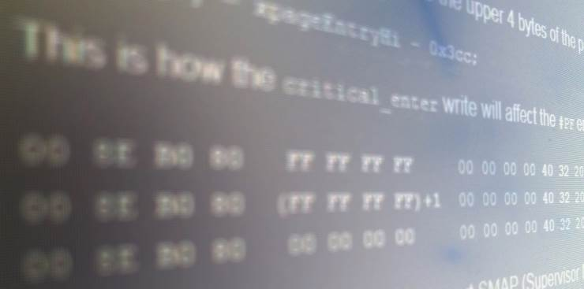
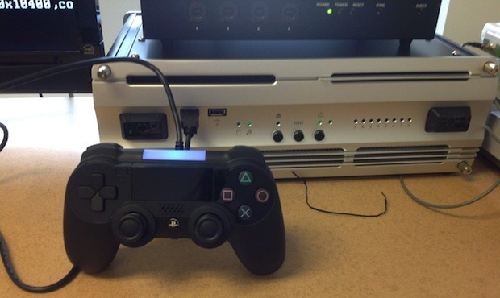

PS4 Jailbreak – Linux on the PS4
In December 2015, Fail0verflow showed at the CCC hacking convention that they have Linux running on the PS4. They stated that they would release Linux patches for people to install linux on their PS4, but with a major caveat: Fail0verflow will only provide the Linux port, not the required PS4 Jailbreak. Hacks have now been released for some models of PS4 to run Linux.
Careful examination of the Fail0verflow presentation showed that the Fail0verflow crew were running their exploits through the Webkit 1.76 exploit, meaning their console was running on Firmware 1.76.
PS4 Jailbreak – CTurt Kernel exploits (BadIRET, dlclose)
In December 2015, hacker CTurt confirmed he has a PS4 jailbreak. He later revealed a second exploit. Both exploits have been released, in particular the dlclose exploit has been releasesd on PS4 firmware 1.76 and below, and is fully functional.
PS4 Jailbreak News & rumors – Fake exploits
Although there is real progress being made on PS4 Jailbreaks and hacks, several sites exist with the goal of tricking you, pretending they have a PS4 Jailbreak for you. We debunk a few of those below, as always, beware of bad sites. When a PS4 Jailbreak is made available for your PS4, popular scene sites such as us at wololo.net will be the firsts to let you know.
If you just found an unknown website that claims to provide a CFW or jailbreak for the PS4, be extremely careful. Such sites are usually trying to get you to answer some sort of survey in order to get the “hack”. This is how they make money in general (but this is not their only technique!), as they get paid for every person who completes a survey. These surveys will most of the time not lead you to anything, or in some cases they will let you download a file that has nothing to do with a PS4 jailbreak. Their explanations for the hack will usually be extremely fishy, for example asking you to copy some files on the PS4 hard drive without explaining how to actually do it, or things similar to that. They have fake comments on their site to make you believe their stuff is legit, and also use black hat techniques to build fake followers on twitter and facebook.